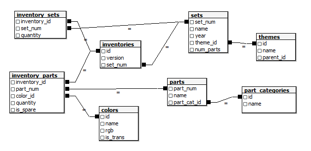
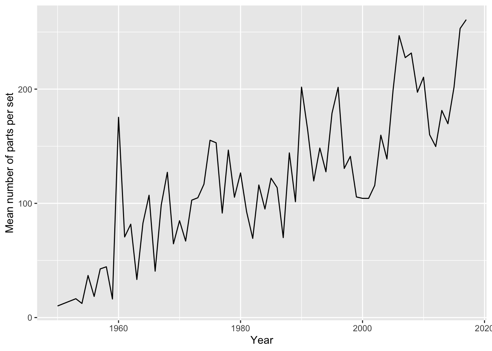
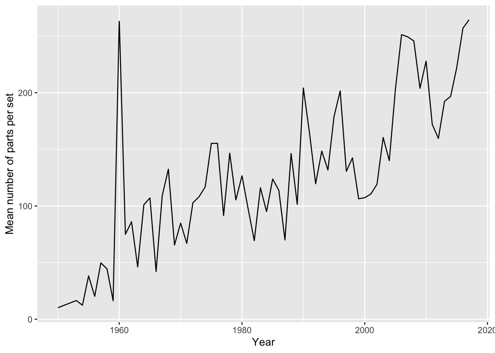

library(DBI)
con <- dbConnect(RSQLite::SQLite(), "data/lego.sqlite")
dbListTables(con)[1] "colors" "inventories" "inventory_parts" "inventory_sets"
[5] "part_categories" "parts" "sets" "themes" This lab accompanies the Week 7 notes, SQL for Data Science.
GROUP BY aggregations and HAVING, and explain what question they answer.R using dbplyr, and read the SQL that it generates.R.When you have finished the lab, there are more questions on the same data in lab_07_practice.qmd, including WHERE and HAVING, LEFT JOIN, a second schema to critique, joining a tibble to a database table, and grouping themes into families.
The database data/lego.sqlite contains information about LEGO sets released between 1950 and 2017, and the parts they contain. Its schema is shown in the figure below.

In the schema:
The cell below connects to the database and lists its tables. We will keep this connection open for the whole lab, and close it at the end.
library(DBI)
con <- dbConnect(RSQLite::SQLite(), "data/lego.sqlite")
dbListTables(con)[1] "colors" "inventories" "inventory_parts" "inventory_sets"
[5] "part_categories" "parts" "sets" "themes" In this task you will be reading SQL rather than writing it. Each query is in a sql chunk, which runs it against the database con, as in the Week 7 notes. For example, this query returns the first five rows of the sets table:
SELECT * FROM sets LIMIT 5;| set_num | name | year | theme_id | num_parts |
|---|---|---|---|---|
| 00-1 | Weetabix Castle | 1970 | 414 | 471 |
| 0011-2 | Town Mini-Figures | 1978 | 84 | 12 |
| 0011-3 | Castle 2 for 1 Bonus Offer | 1987 | 199 | 2 |
| 0012-1 | Space Mini-Figures | 1979 | 143 | 12 |
| 0013-1 | Space Mini-Figures | 1979 | 143 | 12 |
For each of the four queries below:
(Hint: read each query in the order that the database evaluates it, starting at FROM. See Reading SQL Queries in the Week 7 notes.)
-- Query 1
SELECT COUNT(*) AS n_sets
FROM sets;| n_sets |
|---|
| 11673 |
-- Query 2
SELECT name, year, num_parts
FROM sets
ORDER BY num_parts DESC
LIMIT 5;| name | year | num_parts |
|---|---|---|
| Taj Mahal | 2008 | 5922 |
| Star Wars / M&M Mosaic - Promo Set | 2005 | 5461 |
| Window Exploration Bag | 2010 | 5200 |
| Millennium Falcon - UCS | 2007 | 5195 |
| Firehouse Headquarters | 2016 | 4640 |
-- Query 3
SELECT year, COUNT(*) AS n_sets
FROM sets
GROUP BY year
ORDER BY n_sets DESC
LIMIT 1;| year | n_sets |
|---|---|
| 2014 | 713 |
-- Query 4
SELECT COUNT(*) AS n_parts
FROM parts
JOIN part_categories ON parts.part_cat_id = part_categories.id
WHERE part_categories.name = 'Minifigs';| n_parts |
|---|
| 8556 |
Solution.
ORDER BY num_parts DESC sorts the sets from largest to smallest, and LIMIT 5 keeps the first five. The largest is the Taj Mahal (5,922 parts). Note that not every “set” is a boxed model: the Window Exploration Bag is a bag of loose parts.GROUP BY year makes one row per year, COUNT(*) counts the sets in each, and ORDER BY ... LIMIT 1 keeps the year with the largest count: one row and two columns, 713 sets in 2014. (If two years had tied, LIMIT 1 would hide one of them.)WHERE keeps the parts whose category is called Minifigs: 8,556 parts. Each row of parts is a different part, because part_num is its primary key, so this counts different parts rather than the number of minifig pieces that have been made.Whether 8,556 is the answer to “how many minifig parts are there?” depends on what you count as a minifig part: two other categories also contain figures and their accessories.
SELECT * FROM part_categories WHERE id IN (13, 27, 57);| id | name |
|---|---|
| 13 | Minifigs |
| 27 | Minifig Accessories |
| 57 | Non-Buildable Figures (Duplo, Fabuland, etc) |
A colleague wants to know which LEGO theme has the most sets. They have written two queries, which give different answers.
-- Query A
SELECT themes.name, COUNT(*) AS n_sets
FROM sets
JOIN themes ON sets.theme_id = themes.id
GROUP BY themes.id, themes.name
ORDER BY n_sets DESC
LIMIT 5;| name | n_sets |
|---|---|
| Gear | 246 |
| Supplemental | 240 |
| Duplo | 219 |
| City | 216 |
| Friends | 192 |
-- Query B
SELECT themes.name, COUNT(*) AS n_sets
FROM sets
JOIN themes ON sets.theme_id = themes.id
GROUP BY themes.name
ORDER BY n_sets DESC
LIMIT 5;| name | n_sets |
|---|---|
| Supplemental | 496 |
| Technic | 435 |
| City | 287 |
| Friends | 269 |
| Basic Set | 257 |
SELECT * FROM themes WHERE name = 'Technic';| id | name | parent_id |
|---|---|---|
| 1 | Technic | NA |
| 256 | Technic | 254 |
| 453 | Technic | 443 |
| 498 | Technic | 497 |
| 525 | Technic | 524 |
| 529 | Technic | 507 |
SELECT name, year, num_parts FROM sets WHERE theme_id = 501 LIMIT 10;| name | year | num_parts |
|---|---|---|
| Building Ideas Book | 1985 | 0 |
| Pen Pack Alpha | 2000 | 0 |
| Building Ideas Book | 1976 | 0 |
| LEGO® Star Wars™ Darth Vader™ Watch | 2011 | 0 |
| Luke Skywalker Watch | 2011 | 0 |
| LEGO® Star Wars™ Darth Maul™ Watch | 2009 | 0 |
| Exclusive Spaceman Magnet | 2010 | 8 |
| LEGO® Star Wars™ Stormtrooper™ Kid’s Watch | 2011 | 0 |
| Brickmaster Star Wars | 2011 | 251 |
| LEGO Harry Potter: Years 1-4 Video Game | 2010 | 0 |
Solution. Query A groups the sets by theme id, so it answers which five themes have the most sets?, treating every row of themes as a separate theme. Query B groups by theme name, so it answers which five theme names are shared by the most sets?: themes with the same name are merged into a single group.
The two differ because theme names are not unique. There are six different themes called Technic, each with a different parent theme, and Query B adds their sets together. Only id, the primary key, is guaranteed to identify a single theme.
Neither query really tells us which theme is the most popular. The top theme in Query A is Gear, which is LEGO merchandise (watches, clocks, storage boxes), and most of its “sets” have no parts at all. Fourth in Query A is a theme called City (id 220), but its parent is Advent Sub-Set: each of its “sets” is a single day of a City advent calendar. In Query B, Supplemental comes top, and its sets are packs of spare bricks. A count of sets measures how many products were released, not how many were sold, and the database contains no sales data at all.
Next, we look at how the database is structured. Each line in the schema figure joins a column in one table to a column in another.
SELECT set_num, COUNT(*) AS n_inventories
FROM inventories
GROUP BY set_num
ORDER BY n_inventories DESC
LIMIT 5;| set_num | n_inventories |
|---|---|
| 421-2 | 5 |
| 8880-1 | 2 |
| 8030-1 | 2 |
| 75053-1 | 2 |
| 6515-1 | 2 |
SELECT * FROM inventories WHERE set_num = '421-2';| id | version | set_num |
|---|---|---|
| 14143 | 1 | 421-2 |
| 17848 | 2 | 421-2 |
| 17849 | 3 | 421-2 |
| 17850 | 4 | 421-2 |
| 17851 | 5 | 421-2 |
SELECT sets.name, inventory_sets.set_num, inventory_sets.quantity
FROM inventory_sets
JOIN inventories ON inventory_sets.inventory_id = inventories.id
JOIN sets ON inventories.set_num = sets.set_num
LIMIT 6;| name | set_num | quantity |
|---|---|---|
| Speed Champions Collection 2 | 75911-1 | 1 |
| Speed Champions Collection 2 | 75912-1 | 1 |
| Star Wars Super Pack 2 in 1 (75048, 75053) | 75048-1 | 1 |
| Star Wars Super Pack 2 in 1 (75048, 75053) | 75053-1 | 1 |
| Special Track Kit | 4515-1 | 1 |
| Special Track Kit | 4520-1 | 2 |
Solution. Every line in the figure joins a foreign key to the primary key of another table:
| Line | Relationship |
|---|---|
themes.id – sets.theme_id |
One theme has many sets; each set has one theme. |
part_categories.id – parts.part_cat_id |
One category has many parts; each part has one category. |
sets.set_num – inventories.set_num |
One set has many inventories; each inventory belongs to one set. |
inventories.id – inventory_parts.inventory_id |
One inventory has many rows in inventory_parts; each row belongs to one inventory. |
parts.part_num – inventory_parts.part_num |
One part has many rows in inventory_parts; each row is for one part. |
colors.id – inventory_parts.color_id |
One colour has many rows in inventory_parts; each row is in one colour. |
inventories.id – inventory_sets.inventory_id |
One inventory has many rows in inventory_sets; each row belongs to one inventory. |
sets.set_num – inventory_sets.set_num |
One set has many rows in inventory_sets; each row is for one set. |
So every line is one-to-many, read from the primary key to the foreign key (or many-to-one, read the other way). This is no accident: a primary key is unique, so each row on the foreign key side can match only one row on the primary key side, whereas nothing stops many rows from sharing the same foreign key value.
The query counts the inventories of each set, and shows that set 421-2 has five, which are different versions of its parts list. Only 8 sets have more than one inventory (and 3 have none), so the relationship is almost one-to-one, but the database allows one-to-many. This matters when joining: a query that joins sets to inventories would count set 421-2 five times.
sets and parts are many-to-many: a set contains many different parts, and a part appears in many sets. A single line cannot represent this, because a column holds one value in each row. Instead, it goes through a linking table with one row for each combination: each set has an inventory (inventories), and inventory_parts has a row for each part, in each colour, in each inventory. This is why the natural key of inventory_parts combines several columns, as we will see next.
inventory_sets is another linking table, for sets that contain other sets. The third query joins each of its rows to the inventory, and then to the set that the inventory belongs to, giving the name of the containing set alongside each set it contains. For example, the inventory of the Star Wars Super Pack 2 in 1 contains the two sets 75048 and 75053. An inventory can contain many sets (up to 30) and a set can appear in many inventories (up to 12), so this relationship between inventories and sets is many-to-many too.
Finally, here is the CREATE TABLE statement that was used to create inventory_parts. (SQLite stores these statements in a special table called sqlite_master; we have tidied up its formatting.)
CREATE TABLE inventory_parts (
inventory_id INTEGER,
part_num TEXT,
color_id INTEGER,
quantity INTEGER,
is_spare TEXT,
FOREIGN KEY (color_id) REFERENCES colors(id),
FOREIGN KEY (inventory_id) REFERENCES inventories(id),
FOREIGN KEY (part_num) REFERENCES parts(part_num)
);SELECT COUNT(*) AS n_repeated
FROM (
SELECT inventory_id, part_num, color_id
FROM inventory_parts
GROUP BY inventory_id, part_num, color_id
HAVING COUNT(*) > 1
);| n_repeated |
|---|
| 27324 |
SELECT *
FROM inventory_parts
WHERE inventory_id = 3 AND part_num = '33291' AND color_id = 191;| inventory_id | part_num | color_id | quantity | is_spare |
|---|---|---|---|---|
| 3 | 33291 | 191 | 3 | f |
| 3 | 33291 | 191 | 1 | t |
Solution. Without a primary key, nothing stops the same row from being inserted twice, which would double-count parts. There is also no way to identify one particular row, for example to UPDATE or DELETE it, other than by listing all of its values.
Each row of inventory_parts says how many of one part, in one colour, are in one inventory, so a natural key combines inventory_id, part_num and color_id. The query groups the rows by these three columns, keeps the groups with more than one row, and counts those groups: 27,324 combinations appear more than once, so these three columns are not a valid key. The example shows why: inventory 3 contains three of part 33291 in colour 191, plus one more as a spare. Adding is_spare to the key fixes this: no combination of all four columns is repeated, so PRIMARY KEY (inventory_id, part_num, color_id, is_spare) would be a valid key.
dbplyrIn this task we query the same database using dplyr code, which dbplyr translates into SQL. The cell below creates a lazy table for each of the tables we need.
library(tidyverse)Warning: package 'dplyr' was built under R version 4.4.3library(dbplyr)
sets <- tbl(con, "sets")
themes <- tbl(con, "themes")
inventory_parts <- tbl(con, "inventory_parts")Solution.
sets# Source: table<`sets`> [?? x 5]
# Database: sqlite 3.51.1 [/Users/jon/Teaching/fds/notes/lab_solutions/lab07/data/lego.sqlite]
set_num name year theme_id num_parts
<chr> <chr> <int> <int> <int>
1 00-1 Weetabix Castle 1970 414 471
2 0011-2 Town Mini-Figures 1978 84 12
3 0011-3 Castle 2 for 1 Bonus Offer 1987 199 2
4 0012-1 Space Mini-Figures 1979 143 12
5 0013-1 Space Mini-Figures 1979 143 12
6 0014-1 Space Mini-Figures 1979 143 12
7 0015-1 Space Mini-Figures 1979 143 18
8 0016-1 Castle Mini Figures 1978 186 15
9 00-2 Weetabix Promotional House 1 1976 413 147
10 00-3 Weetabix Promotional House 2 1976 413 149
# ℹ more rowssets is a lazy table: dbplyr has only fetched the first few rows, to show us, so it does not know how many rows the table has without running another query.
Solution.
year_most_sets <- sets |>
group_by(year) |>
summarise(n_sets = n()) |>
arrange(desc(n_sets)) |>
head(1)
show_query(year_most_sets)<SQL>
SELECT `year`, COUNT(*) AS `n_sets`
FROM `sets`
GROUP BY `year`
ORDER BY `n_sets` DESC
LIMIT 1collect(year_most_sets)# A tibble: 1 × 2
year n_sets
<int> <int>
1 2014 713The generated SQL is the same as Query 3, apart from the backticks around names.
Solution.
top_level <- themes |>
filter(is.na(parent_id)) |>
summarise(n_top_level = n())
show_query(top_level)<SQL>
SELECT COUNT(*) AS `n_top_level`
FROM (
SELECT `themes`.*
FROM `themes`
WHERE ((`parent_id` IS NULL))
) AS `q01`collect(top_level)# A tibble: 1 × 1
n_top_level
<int>
1 111dbplyr translates is.na(parent_id) into parent_id IS NULL. parent_id == NA would compare each value with “unknown”, which is never true, in R as well as in SQL; it is translated to parent_id = NULL, and keeps no rows:
themes |>
filter(parent_id == NA) |>
summarise(n_top_level = n()) |>
collect()# A tibble: 1 × 1
n_top_level
<int>
1 0Next, we ask: are LEGO sets getting bigger?
Solution.
sets |>
group_by(year) |>
summarise(mean_parts = mean(num_parts, na.rm = TRUE), .groups = "drop") |>
collect() |>
ggplot(aes(x = year, y = mean_parts)) +
geom_line() +
labs(x = "Year", y = "Mean number of parts per set")
Everything before collect() runs in the database, so only one row per year is sent to R; ggplot then runs in R. (Without na.rm = TRUE, dbplyr warns that SQL always removes missing values when it aggregates.)
sets |>
filter(num_parts == 0) |>
count(theme_id) |>
inner_join(themes, by = c("theme_id" = "id")) |>
arrange(desc(n)) |>
head(5) |>
collect()# A tibble: 5 × 4
theme_id n name parent_id
<int> <int> <chr> <int>
1 501 181 Gear NA
2 503 122 Key Chain 501
3 497 31 Books NA
4 238 17 My Own Train 236
5 259 16 NXT 258Most of the sets with no parts are Gear, key chains and books: they are not building sets, so they should be left out of an average set size.
sets |>
filter(num_parts > 0) |>
group_by(year) |>
summarise(mean_parts = mean(num_parts, na.rm = TRUE), .groups = "drop") |>
collect() |>
ggplot(aes(x = year, y = mean_parts)) +
geom_line() +
labs(x = "Year", y = "Mean number of parts per set")
Sets have grown: the mean number of parts has risen from under 50 in the 1950s to over 200 in the 2010s. Not every point is equally reliable, though. Counting the sets behind each mean shows that the spike in 1960 is based on just two sets, one of which has 476 parts:
sets |>
filter(num_parts > 0, year %in% c(1959, 1960, 1961, 2016, 2017)) |>
group_by(year) |>
summarise(
n_sets = n(),
mean_parts = mean(num_parts, na.rm = TRUE),
.groups = "drop"
) |>
collect()# A tibble: 5 × 3
year n_sets mean_parts
<int> <int> <dbl>
1 1959 4 16.2
2 1960 2 263
3 1961 16 75
4 2016 587 257.
5 2017 292 264. The data also stop part of the way through 2017, so the last point is based on about half as many sets as 2016, and these may not be a typical selection of the year’s sets.
Finally, we compare doing the work in the database with doing it in R. Both of the pipelines below count the total number of parts of each colour.
# Pipeline 1
inventory_parts |>
group_by(color_id) |>
summarise(total = sum(quantity, na.rm = TRUE), .groups = "drop") |>
collect()
# Pipeline 2
inventory_parts |>
collect() |>
group_by(color_id) |>
summarise(total = sum(quantity), .groups = "drop")Solution. Both give the same result, but Pipeline 1 is better. It sums the quantities in the database and sends R one row per colour, whereas Pipeline 2 first copies all 580,069 rows of inventory_parts into R.
quantile() has no translation into SQLite’s SQL, so the query fails:
sets |>
summarise(p90 = quantile(num_parts, 0.9)) |>
collect()Error in `quantile()`:
! `quantile()` is not available in this SQL variant.To fix it, we collect just the column we need, and calculate the percentile in R:
sets |>
select(num_parts) |>
collect() |>
summarise(p90 = quantile(num_parts, 0.9))# A tibble: 1 × 1
p90
<dbl>
1 445We have finished with the database, so we close the connection:
dbDisconnect(con)Carry on with the questions in lab_07_practice.qmd.